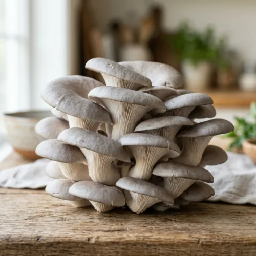
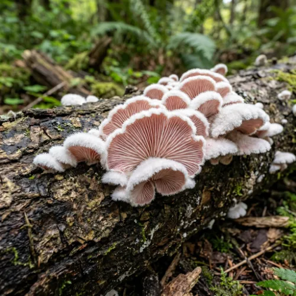
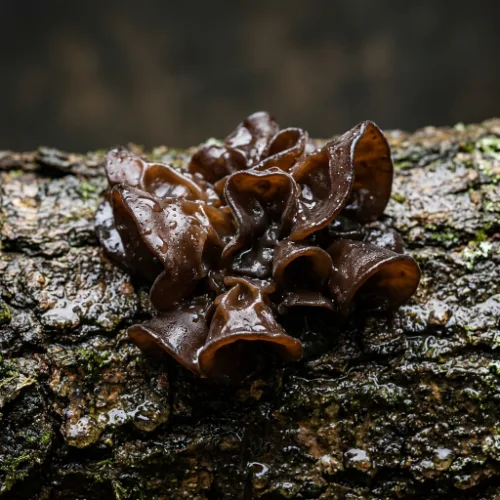

ที่มาของแบบจำลอง MSSM
แบบจำลอง MSSM สามารถจัดอันดับความเหมาะสมของสายพันธุ์เห็ดตามวัตถุประสงค์การผลิต ช่วยเพิ่มประสิทธิภาพการใช้ทรัพยากร ลดความเสี่ยงในการผลิต และเพิ่มผลตอบแทนทางเศรษฐกิจแก่เกษตรกรและชุมชน อีกทั้งยังสามารถประยุกต์ใช้ในการเรียนการสอนและพัฒนาต่อยอดด้านเกษตรอัจฉริยะ ซึ่งสอดคล้องกับเป้าหมายการพัฒนาที่ยั่งยืน (SDGs) ได้แก่ เป้าหมายที่ 2 ขจัดความหิวโหย เป้าหมายที่ 8 งานที่มีคุณค่าและการเติบโตทางเศรษฐกิจ และเป้าหมายที่ 12 การผลิตและการบริโภคที่ยั่งยืน
🍄 ข้อมูลสายพันธุ์เห็ด

- จุดเด่น: ดอกใหญ่ เนื้อแน่น
- โภชนาการ: 30-47 kcal
- เพาะง่าย ใน 7 วัน
- จุดเด่น: หวานนุ่ม ละมุนลิ้น
- แคลอรี่ต่ำ เหมาะควบคุมน้ำหนัก
- โตไว เลี้ยงง่ายที่สุด

- จุดเด่น: เนื้อนุ่มหนึบหนับ
- โปรตีนสูง 17g / 100g
- Superfood ระดับพรีเมียม

- จุดเด่น: กรุบกรอบ ไฟเบอร์สูง
- ธาตุเหล็ก 6.1 mg
- เก็บได้นาน ในตู้เย็น
📊 ผลการประเมิน MSSM
คลิกปุ่มด้านล่างเพื่อสลับดูกราฟแต่ละปัจจัย
มาตรฐาน
อ้างอิงค่าน้ำหนัก MSSM
กำหนดเอง
ปรับน้ำหนักตามต้องการ
ปรับแต่งค่าน้ำหนัก
เลื่อนแถบปรับน้ำหนักแต่ละปัจจัย (ผลรวมไม่เกิน 1.0)
Zero Waste Life
ชุบชีวิตก้อนเห็ดเก่าสู่ปุ๋ยอินทรีย์
แยกพลาสติกและจุกทิ้งลงถังรีไซเคิล
แกะขี้เลื่อยด้านในออกมาทุบให้แตก
ผสมปุ๋ยคอก พรมน้ำพอหมาด
ได้ปุ๋ยอินทรีย์ชั้นดีพร้อมใช้บำรุงต้นไม้
📞 ติดต่อเรา
ครูที่ปรึกษา
- นายวิระศักดิ์ พูนพนัง โทร: 083-5356865อีเมล: wirasak413205@gmail.com
- นางสาวกนกนาถ จันทรโชตะ โทร: 062-6683443อีเมล: kanoknard@nvc.ac.th
- นางสาวสุรัตนี เสนีชัย โทร: 085-2276413อีเมล: Surattanee6413@gmail.com
- นางสาวอังคณา ชูสุวรรณ โทร: 085-7959291อีเมล: nang29angkana05@gmail.com
- นางสาวศิรภัสสร สิทธิพิทักษ์ โทร: 081-1880835อีเมล: pungpond.5040@gmail.com
นักศึกษา
- นายทานุฑัต ทิพย์เสภา โทร: 092-3685270อีเมล: thanututt@gmail.com
- นางสาวกวินธิดา คชรัตน์ โทร: 083-5092468อีเมล: nongkawinforwork@gmail.com
- นายสัณห์ สังขพงศ์ โทร: 094-1973159อีเมล: Thoezaab@gmail.com
- นายวุฒิภัทร มากด้วง โทร: 083-4317907อีเมล: wuttiparmarkduang@gmail.com
- นายภคพล สมัยแก้ว โทร: 061-2166244อีเมล: feel0627546143@gmail.com